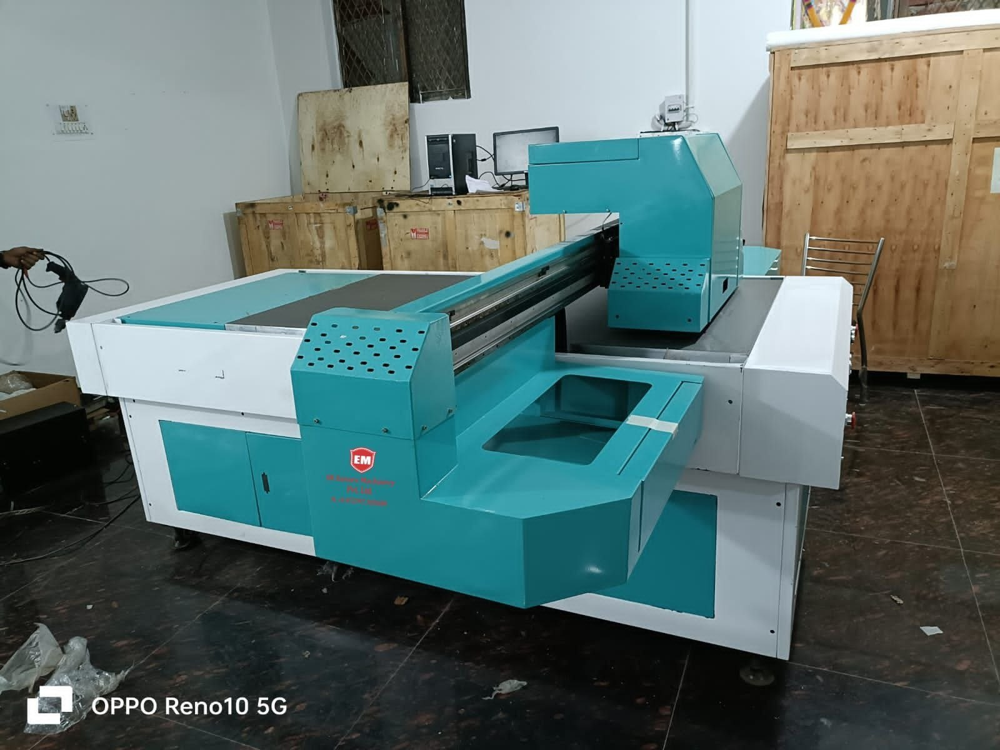
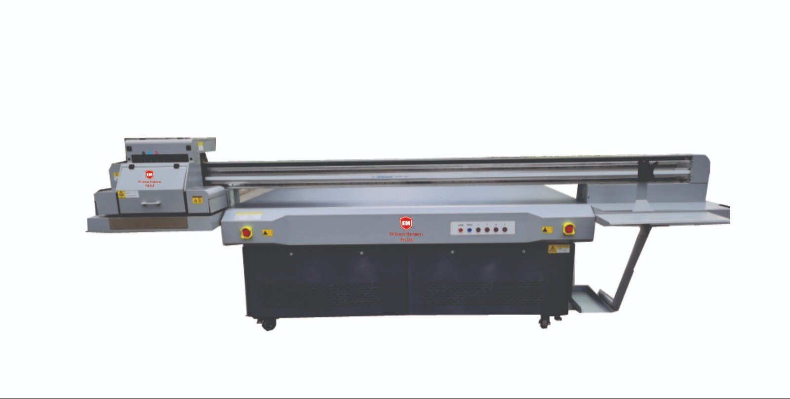

2' x 3' UV Flatbed
A compact flatbed printer ideal for personalized prints on small rigid items.
View Product
5' x 3' UV Flatbed
A mid-size printer suitable for medium-scale rigid substrate printing.
View Product
8' x 4' UV Flatbed
A large-format industrial printer perfect for full-sheet rigid printing on wood, acrylic, or PVC.
View Product